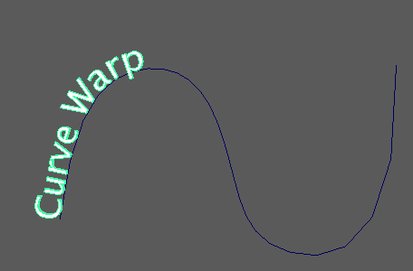

如果要沿曲线的长度方向使对象变形，请使用曲线扭曲。您稍后对曲线所做的任何修改将会影响变形对象。
若要快速扭曲网格曲线，请依次选择网格和输入曲线，然后转到。Maya 会创建 curveWarp 节点并自动将选定曲线指定为其输入曲线。
或者，您可以：
- 选择输入网格。
- 执行下列操作之一：
- 在“动画”(Animation)、“建模”(Modeling)或“绑定”(Rigging)菜单集中，转到“变形 > (创建)曲线扭曲”(Deform > (Create) Curve Warp) >

- 单击 MASH 工具架中的“曲线扭曲”(Curve Warp)图标。
- 在“动画”(Animation)、“建模”(Modeling)或“绑定”(Rigging)菜单集中，转到“变形 > (创建)曲线扭曲”(Deform > (Create) Curve Warp) >
- 在属性编辑器中，使用鼠标中键将所需的输入曲线拖动到“曲线”(Curve)字段中，或者选择曲线，在“曲线”(Curve)字段上单击鼠标右键，然后单击“连接”(Connect)。